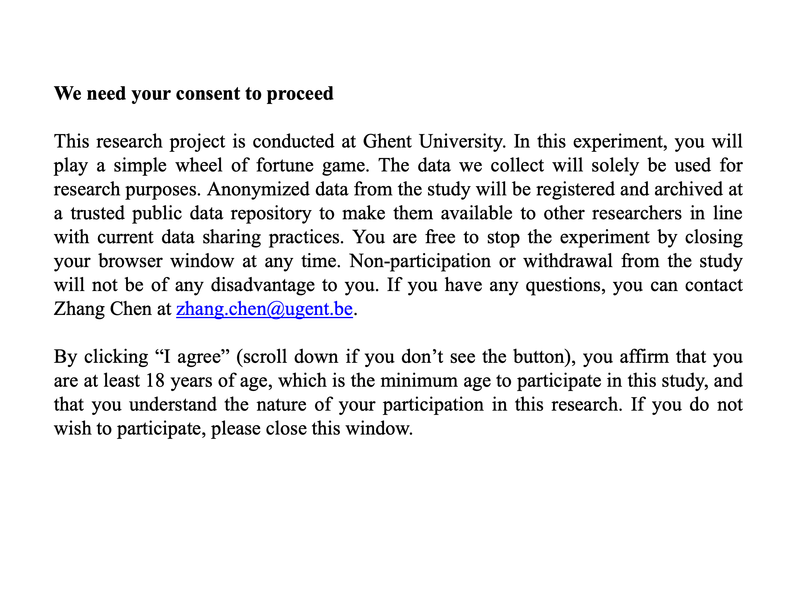
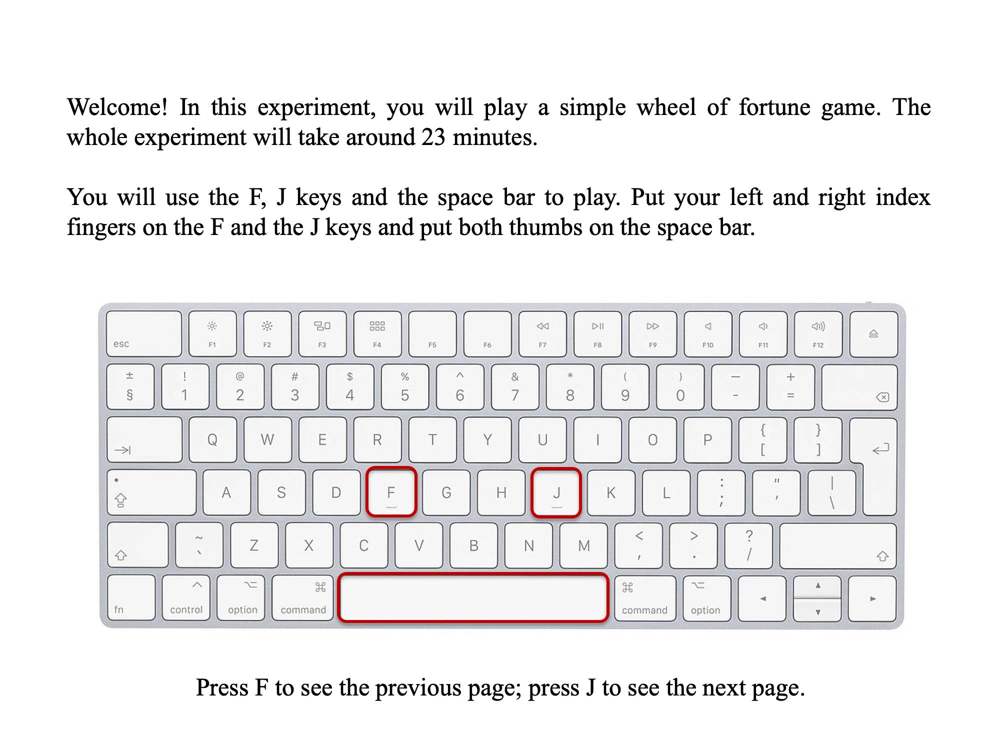
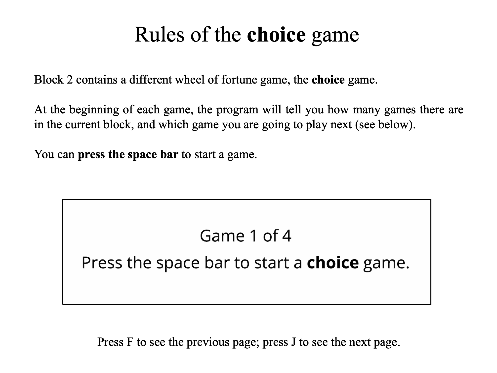
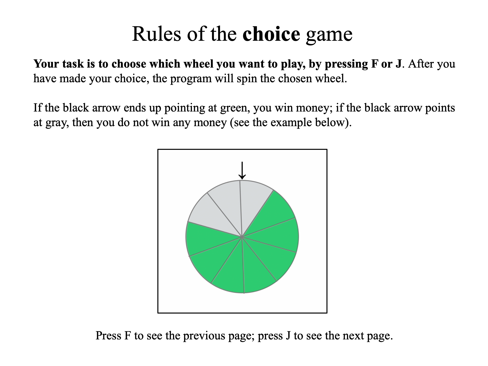

<!doctype html>
<html>
<head>
  <meta charset="utf-8"/>
  <title>Guessing Game</title>
  <script src="js/jspsych-6.2.0/jspsych.js"></script>
  <script src="js/jspsych-6.2.0/plugins/jspsych-fullscreen.js"></script>
  <script src="js/jspsych-6.2.0/plugins/jspsych-instructions.js"></script>
  <script src="js/jspsych-6.2.0/plugins/jspsych-html-slider-response.js"></script>
  <script src="js/jspsych-6.2.0/plugins/jspsych-survey-text.js"></script>
  <script src="js/jspsych-6.2.0/plugins/jspsych-survey-likert.js"></script>
  <script src="js/jspsych-6.2.0/plugins/jspsych-survey-multi-choice.js"></script>
  <script src="js/jspsych-6.2.0/plugins/jspsych-html-keyboard-response.js"></script>
  <script src="js/jspsych-6.2.0/plugins/jspsych-html-keyboard-response-custom.js"></script>  <!-- custom plugin that also monitors responses made with invalid keys -->
  <script src="js/jspsych-6.2.0/plugins/jspsych-html-slider-response.js"></script>
  <script src="js/jquery-1.7.1.min.js"></script> <!-- the jquery library is used to communicate with the server (to store the data) through "AJAX" and PHP -->
  <script src="js/bowser.js"></script>
  <script src="configurations/UPPSP.js"></script> <!-- the UPPS-P impulsive behavior scale -->
  <script src="configurations/PGSI.js"></script> <!-- the Problem Gambling Severity Index scale -->
  <link href="js/jspsych-6.2.0/css/jspsych.css" rel="stylesheet" type="text/css"></link>
  <link href="configurations/custom.css" rel="stylesheet" type="text/css"></link> <!-- custom css code -->
</head>
<body>
</body>
<script>

/********************************************************
initialize variables
********************************************************/

/* global variables to keep track of things */

// is the experiment running from a server or not? (this determines if data is saved on server or offline)
if (document.location.host) { // returns your host or null
  var online = true;
} else {
  var online = false;
};

var timeline = []; // create an empty timeline variable

// create empty arrays to save the outcomes of the guessing and the choice games
var guessing_game_outcomes = [];
var choice_game_outcomes = [];

var task; // which task is it?
var trial_number = 0; // trial number in each task
var trial_condition; // trial condition in the guessing task, 'experimental' or 'catch'

// which color to use in game 1, can be 'mixed', 'blue' or 'yellow'
var game1_color_front;

// in case of gambling in game 1, the instruction will say 'Blue or Yellow?'
// in case of non-gamble in game 1, the instruction will say 'Blue only.' or 'Yellow only'.
var game1_text_instruction;

var game1_startRT; // how quickly participants start game 1
var premature_game1_start; // how many premature/invalid responses participants make before starting game 1

var game1_respKey; // which key participants press in game 1, f or j
var game1_respRT; // how quickly participants guess in game 1
var premature_game1_choice; // how many premature/invalid responses participants make before choice in game 1

var game1_option_states; // the states of two options in game 1
var game1_color_back; // the final color in game 1, can be blue or yellow
var game1_outcome; // the outcome of game 1, win, loss or neutral
var game1_outcome_message; // the text message for showing game 1 outcome
var premature_game1_outcome; // how many premature/invalid responses participants make during the outcome phase of game 1

var game2_startRT; // how quickly participants start game 2
var premature_game2_start; // how many premature/invalid responses participants make before starting game 2

var delay; // whether there is a delay between game 1 and game 2
var premature_game2_delay; // how many premature/invalid responses participants make during the wait period

var game2_NG_amount; // the amount of non-gamble option in game 2
var game2_G_amount; // the amount of gamble option in game 2
var game2_win_prob; // the probability of winning for the gamble option in game 2

var game2_pos; // the left right position of the gamble and non-gamble options in game 2
var game2_probs; // the win probabilities of the left and right option
var game2_amounts; // the win amount of the left and right option
var game2_option_states; // the states of two options in game 2, 'unselected' or 'selected'

var game2_respKey; // which key participants use in game 2
var game2_respRT; // how quickly participants guess in game 2
var game2_gambled; // whether participant chooses to gamble or not in game 2
var premature_game2_choice; // how many premature/invalid responses participants make before choice in game 2
var pie_back_color; // the color of the back side of a pie, can be 'green' or 'red'

var game2_outcome; // the outcome of game 2, win or loss or neutral (non-gamble)
var game2_outcome_amount; // the amount of points participants get in game 2
var game2_outcome_message; // the text message for showing game 2 outcome
var premature_game2_outcome; // how many premature/invalid responses participants make during the outcome phase of game 2

var total_points = 0; // the total amount of points of the randomly selected games

/* all images and audios used in the experiment */

var instruct_images = ['Instructions/Slide1.png', 'Instructions/Slide2.png', 'Instructions/Slide3.png', 'Instructions/Slide4.png',
                       'Instructions/Slide5.png', 'Instructions/Slide6.png', 'Instructions/Slide7.png', 'Instructions/Slide8.png',
                       'Instructions/Slide9.png', 'Instructions/Slide10.png', 'Instructions/Slide11.png', 'Instructions/Slide12.png'];

var all_images = ['images/blue.png', 'images/yellow.png', 'images/mixed.png', 'images/blue_F.png', 'images/yellow_J.png'];

all_images = all_images.concat(instruct_images);

var all_audios = ['card_flip.mp3'];

/********************************************************
Create trials to be used in the experiment
********************************************************/

// all factors in the design
var factor_game1_outcome = ['win', 'loss', 'neutral'];
var factor_delay = ['no', 'yes'];
var factor_game2_expected_value = [20, 30, 40, 50, 60];
var factor_game2_win_prob = [2/3, 1/2, 1/3, 1/4];
var factor_trial_condition = ['experimental'];

// create the full design
var factors = {
  game1_outcome:factor_game1_outcome,
  delay: factor_delay,
  game2_expected_value: factor_game2_expected_value,
  game2_win_prob: factor_game2_win_prob,
  trial_condition: factor_trial_condition
}

var full_design = jsPsych.randomization.factorial(factors, 1);

// create some 'catch' trials, in which the non-gamble amount exceeds the gamble amount
// we include these 'catch' trials as attention checks, to see if participants process
// the win amounts and win probability information before making a choice.
var factors_catch_trials = {
  game1_outcome: factor_game1_outcome,
  delay: ['no'],
  game2_expected_value: [20, 30],
  game2_win_prob: [2/3, 1/2],
  trial_condition: ['catch']
}

var full_design_catch = jsPsych.randomization.factorial(factors_catch_trials, 1);

// the total number of trials;
// note one trial here stands for a pair of two games.
var ntrials = full_design.length + 5; // we will use 5 catch trials

// create all trials used in the experiment, and then
// randomize the trials with the constraint that the delay trials
// do not occurr four times in a row
while (true) {

  // an empty list to save the trials generated later on
  var trials = [];

  // randomly shuffle the experimental and the catch trials
  full_design = jsPsych.randomization.shuffle(full_design);
  full_design_catch = jsPsych.randomization.shuffle(full_design_catch);

  // make copies of the arrays
  trials_exp = [...full_design];
  trials_catch = [...full_design_catch];

  for (var i = 0; i < ntrials; i++) {

    trial_number = i+1;

    // use the catch trial every 25 trials
    if (trial_number % 25 === 0) {

      // Array.pop() returns the last element in the array
      var current_trial = trials_catch.pop();

      // in catch trials, the non-gamble option has a higher amount
      current_trial.game2_G_amount = current_trial.game2_expected_value/current_trial.game2_win_prob;

      // randomly generate a value of 10, 20 or 30,
      // to make the non-gamble amount larger than the gamble amount
      var ramdom_increment = Math.ceil(Math.random()*3) * 10;
      current_trial.game2_NG_amount = current_trial.game2_G_amount + ramdom_increment;


    } else{ // otherwise use experimental trials
      var current_trial = trials_exp.pop();

      // in experimental trials, the expected values of both optios match
      current_trial.game2_G_amount = current_trial.game2_expected_value/current_trial.game2_win_prob;

      current_trial.game2_NG_amount = current_trial.game2_expected_value;

    }

    // add trial number
    current_trial.trial_number = trial_number;

    // add the selected trial to the overall array
    trials.push(current_trial);
  }

  // create a counter, to count how often three delay trials occur in a row
  var counter = 0;

  for (var i = 0; i < (trials.length - 3); i++) {

    if (trials[i].delay === "yes" && trials[i+1].delay === "yes" && trials[i+2].delay === "yes" && trials[i+3].delay === "yes") {
      counter ++;
    }
  }

  if (counter === 0){
    break;
  }

}

/********************************************************
Informed consent and demographic information
********************************************************/

/*********** welcome message ***********/
// End the experiment if browser is not Chrome or Firefox

var welcome_message = ['<p>Welcome to the experiment.</p>' + '<p>Press "Next" to begin.</p>'];
var not_supported_message = ['<p>This experiment requires the Chrome or Firefox webbrowser.</p>'];

var welcome = {
  type: "instructions",
  pages: welcome_message,
  show_clickable_nav: true,
  button_label_next: "Next",
  on_start: function(trial){
    if (bowser.name == 'Firefox' || bowser.name == 'Chrome'){
      trial.pages = welcome_message;
    } else {
      trial.pages = not_supported_message;
      setTimeout(function(){location.href="html/not_supported.html"}, 2000);
    }
  }
};

/*********** informed consent ***********/
var consent = {
  type: 'instructions',
  pages: ['</img>'],
  show_clickable_nav: true,
  button_label_next: "I agree",
  allow_backward: false
};


/*********** Adjust volume ***********/

var adjust_volume = {
  type: 'html-keyboard-response',
  stimulus: '<p>This experiment contains some sound effects. Turn on your speaker and adjust the volume of your speaker to a comfortable level. <br><br>You can test the sound below. Press J to continue once you are ready.</p><audio controls src="card_flip.mp3"></audio>',
  choices: ['j']
}


/*********** prolific ID ***********/

var prolific = {
  type: 'survey-text',
  questions: [
    {prompt: "Enter your name. We need your name to give you credit in Sona: ", required: true}],
  on_finish: function(data) {
    // get subject ID
    var responses = JSON.parse(data.responses);
    var subject_ID = responses.Q0;

    // add subject_ID to jsPsych data
    jsPsych.data.addProperties({
      subject_ID: subject_ID,
    });
  }
};

/*********** fullscreen mode ***********/

var fullscreen_mode = {
  type: 'fullscreen',
  fullscreen_mode: true
};

/*********** demographic info ***********/

// get age and nationality
var age_nationality = {
  type: 'survey-text',
  questions: [
    {prompt: "Please enter your age", required: true},
    {prompt: "Please enter your nationality", required: true}],
  on_finish: function(data) {
    var responses = JSON.parse(data.responses);
    var age = responses.Q0;
    var nationality = responses.Q1;
    jsPsych.data.addProperties({
      age: age,
      nationality: nationality
    });
  }
};

// get participant's gender
var gender = {
  type: 'survey-multi-choice',
  questions: [{
    prompt: "Please enter your gender",
    options: ["male", "female", "non-binary", "I don't want to say"],
    required: true
  }],
  on_finish: function(data) {
    var responses = JSON.parse(data.responses);
    var gender = responses.Q0;
    jsPsych.data.addProperties({
      gender: gender
    });
  }
};

// informed consent and demographic information
var consent_demo = [welcome, consent, adjust_volume, prolific, fullscreen_mode, age_nationality, gender];

/********************************************************
Instruction pages
********************************************************/


var guessing_instruction = {
  type: 'instructions',
  pages: ['</img>',
          '</img>',
          '</img>',
          '</img>',
          '</img>',
          '</img>',
          '</img>',
          '</img>',
          '</img>'],
  allow_backward: true,
  key_forward: 'j',
  key_backward: 'f',
  on_finish: function(){
    // reset trial number and change task name
    trial_number = 0;
    task = 'guessing';
    document.body.style.cursor = 'none'; // hide the mouse cursor
  }
};

// as an exploratory measure, include the PGSI
var PGSI_instruction = {
  type: 'instructions',
  pages: ['</img>'],
  allow_backward: false,
  key_forward: 'j',
  on_finish: function(){
    // reset trial number and change task name
    trial_number = 0;
    task = 'PGSI';
    document.body.style.cursor = 'auto'; // show the mouse cursor
  }
};

var UPPSP_instruction = {
  type: 'instructions',
  pages: ['</img>'],
  allow_backward: false,
  key_forward: 'j',
  on_start: function() {
    document.body.style.cursor = 'auto'; // show the mouse cursor
  }
};


var debrief = {
  type: 'html-keyboard-response',
  stimulus: 'none',
  on_start: function(debrief){

    document.body.style.cursor = 'auto'; // show the mouse cursor

    debrief.stimulus = "<p>This is the end of this experiment. Thank you for your participation!</p>" +
    "<p>In this experiment, we are interested in how previous wins and losses may influence how much risk people are willing to take.</p>" +
    "<p>Furthermore, we tested whether inserting a short break would have an influence on people's tendency to take risks (e.g., by choosing to gamble or not).</p>" +
    "<p>We really appreciate your participation and contribution to this research. If you have any questions, you can contact the researcher at zhang.chen@ugent.be.</p><br><br>"+
    "<p>You can close this window now.</p>";

  },
  choices: jsPsych.NO_KEYS
};


/********************************************************
Events that make up a trial in the guessing game
********************************************************/

/******* start game 1 *******/

var game1_start_screen = {
  type: 'html-keyboard-response-custom',
  stimulus: 'placeholder',
  choices: ['space'],
  invalid_choices: ['f', 'j'],
  on_start: function(game1_start_screen){

    // get the parameters of the current trial
    trial_number = jsPsych.timelineVariable('trial_number', true);
    trial_condition = jsPsych.timelineVariable('trial_condition', true);
    game1_outcome = jsPsych.timelineVariable('game1_outcome', true);
    delay = jsPsych.timelineVariable('delay', true);
    game2_NG_amount = jsPsych.timelineVariable('game2_NG_amount', true);
    game2_win_prob = jsPsych.timelineVariable('game2_win_prob', true);
    game2_G_amount = jsPsych.timelineVariable('game2_G_amount', true);

    // compute the current game number and the number of games left
    // we consider one guessing game + choice game as one trial,
    // thus game number is trial_number * 2 - 1.
    var game_number = trial_number * 2 - 1
    var games_left = ntrials * 2 - game_number + 1;

    game1_start_screen.stimulus = '<p style = "font-size: 30px">Press space to start a <b>guessing</b> game.</p>' +
                                  '<p style = "font-size: 25px">' + games_left + ' games left.</p>';

    // determine the text message, the type of color card,
    // and the outcome message based on the outcome of game 1
    if (game1_outcome === "win" ) {
      game1_text_instruction = 'Blue or Yellow?';
      game1_color_front = "mixed";
      game1_outcome_message = "+ 40"; // game 1 has a fixed win/loss amount of 40 points

      // add the outcome of the current guessing game
      guessing_game_outcomes.push({game_number: game_number, amount: 40});

    } else if (game1_outcome === 'loss') {
      game1_text_instruction = 'Blue or Yellow?';
      game1_color_front = "mixed";
      game1_outcome_message = "- 40";

      // add the outcome of the current guessing game
      guessing_game_outcomes.push({game_number: game_number, amount: -40});

    } else {

      game1_outcome_message = "0";

      // add the outcome of the current guessing game
      guessing_game_outcomes.push({game_number: game_number, amount: 0});

      // for the non-gamble trial, the card can be either blue or yellow
      // randomly determine the color of the card
      if (Math.random() < 0.5) {
        game1_text_instruction = 'Blue only.';
        game1_color_front = "blue";
      }else{
        game1_text_instruction = 'Yellow only.';
        game1_color_front = "yellow";
      }
    }

    // randomly determine the left-right position of gamble and non-gamble
    // options in game 2
    if (Math.random() < 0.5) {
      game2_pos = "g-left-ng-right";
    } else{
      game2_pos = "ng-left-g-right";
    }

    // based on the left-right position, determine the win prob and amount
    if (game2_pos === "g-left-ng-right"){
      game2_probs = [game2_win_prob * 100, 100];
      game2_amounts = [game2_G_amount, game2_NG_amount];
    } else{
      game2_probs = [100, game2_win_prob * 100];
      game2_amounts = [game2_NG_amount, game2_G_amount];
    }

    // intially, all options in both games are 'unselected'
    game1_option_states = {f:'unselected', j:'unselected'};
    game2_option_states = {f:'unselected', j:'unselected'};

  },
  on_finish: function(data){

    // register the number of premature/invalid responses
    premature_game1_start = data.invalid_count;

    // record premature responses if they occur
    if(premature_game1_start > 0){
      data.record_premature = 'yes';
      data.phase = 'game1_start';
    }

    // register how quickly participants start, with the space bar
    game1_startRT = data.rt;

  }
};

// add a blank screen of 50 milliseconds
var blank_screen = {
  type: 'html-keyboard-response-custom',
  stimulus: ' ',
  choices: jsPsych.NO_KEYS,
  trial_duration:50
};

/******* Play game 1 *******/

// show game 1
function game1_select_screen_html(){

  var game_html =
    '<div class = "game-container">' +
    '' +
    '<div id="game1_instruction">' + game1_text_instruction+'</div>' +
    '<div class = "F_button unselected"></div>' +
    '<div class = "J_button unselected"></div>' +
    '<div class="flip-color">' +
    '<div id = "color_card" class="flip-color-inner">' +
    '<div class="flip-color-front"></div>' +
    '<div class="flip-color-back"></div>' +
    '</div>' +
    '</div>' +
    '<audio id="flip_audio" src="card_flip.mp3"></audio>' +
    '<div id = "game1_outcome"></div>' +
    '</div>' +
    '</div>' ;

  return game_html;
};

var game1_select_screen = {
  type: 'html-keyboard-response-custom', // custom plugin
  stimulus: 'placeholder',
  on_start: function(game1_select_screen){
    game1_select_screen.stimulus = game1_select_screen_html();

    // depending on the type of color card, determine which keys are allowed
    // and accordingly which keys are invalid
    if (game1_color_front === 'mixed'){
      game1_select_screen.choices = ['f', 'j'];
      game1_select_screen.invalid_choices = ['space'];
    } else if (game1_color_front === 'blue') {
      game1_select_screen.choices = ['f'];
      game1_select_screen.invalid_choices = ['j', 'space'];
    } else {
      game1_select_screen.choices = ['j'];
      game1_select_screen.invalid_choices = ['f', 'space'];
    }

  },
  on_finish: function(data){

    // register the number of premature/invalid responses
    premature_game1_choice = data.invalid_count;

    // record premature responses if they occur
    if(premature_game1_choice > 0){
      data.record_premature = 'yes';
      data.phase = 'game1_choice';
    }

    // register the valid key response and its RT
    game1_respKey = jsPsych.pluginAPI.convertKeyCodeToKeyCharacter(data.key_press);
    game1_respRT = data.rt;

    // each option has a state (css class, see the custom.css file in the configurations folder)
    // of either 'selected' or 'unselected'. When 'selected', the option will be surrounded by
    // a green frame to indicate to participants which option (blue or yellow) they have chosen.
    // Here based on which key participants have pressed, we change the corresponding option to 'selected'.
    game1_option_states[game1_respKey] = 'selected';

    // determine the color of the back side of the card
    // when the current trial is a non-gamble trial, the back side color matches the front size
    if (game1_outcome === 'neutral'){
      if (game1_color_front === 'blue') {
        game1_color_back = 'blue';
      } else {
        game1_color_back = 'yellow';
      }
    } else if (game1_outcome === 'win'){
      // when the current trial is a win, show blue if participant choose F
      // and show yellow if participants choose J, so that their guess is correct
      if (game1_respKey === 'f'){
        game1_color_back = 'blue';
      } else {
        game1_color_back = 'yellow';
      }
    } else {
      // when the current trial is a loss, show yellow if participant choose F
      // and show blue if participants choose J, so that their guess is incorrect
      if (game1_respKey === 'f'){
        game1_color_back = 'yellow';
      } else {
        game1_color_back = 'blue';
      }
    }
  }
}

/******* Outcome of game 1 *******/

function turnColor() {

  // 50 milliseconds after participants make a choice,
  // turn the color card; the animation lasts 500 ms.
  setTimeout(function(){
    document.getElementById("color_card").classList.add("is-flipped");
    // play audio
    document.getElementById("flip_audio").play();
  }, 50);

  // after the card is flipped, show the outcome in text
  setTimeout(function(){

    document.getElementById("game1_outcome").textContent = game1_outcome_message;

  }, 550);
}

// flip the card and show the outcome of game 1
function game1_outcome_screen_html(){

  var game_html =
    '<div class = "game-container">' +
    '' +
    '<div id="game1_instruction">' + game1_text_instruction+'</div>' +
    '<div class = "F_button ' + game1_option_states['f'] + '"></div>' +
    '<div class = "J_button ' + game1_option_states['j']+'"></div>' +
    '<div class="flip-color">' +
    '<div id = "color_card" class="flip-color-inner">' +
    '<div class="flip-color-front"></div>' +
    '<div class="flip-color-back"></div>' +
    '</div>' +
    '</div>' +
    '<audio id="flip_audio" src="card_flip.mp3"></audio>' +
    '<div id = "game1_outcome"></div>' +
    '</div>' +
    '</div>' ;

  return game_html;
};


// the outcome phase of game 1 lasts 1550 milliseconds in total,
// from the moment participants make a choice till the moment game 1 disappears
// the outcome message of game 1 itself is presented for 1000 milliseconds
var game1_outcome_screen = {
  type: 'html-keyboard-response-custom', // custom plugin
  stimulus: 'placeholder',
  on_start: function(game1_outcome_screen){
    game1_outcome_screen.stimulus = game1_outcome_screen_html();
  },
  choices: jsPsych.NO_KEYS,
  invalid_choices: ['f', 'j', 'space'],
  trial_duration: 1550,
  response_ends_trial: false,
  on_finish: function(data){
    // register the number of premature/invalid responses
    premature_game1_outcome = data.invalid_count;

    // record premature responses if they occur
    if(premature_game1_outcome > 0){
      data.record_premature = 'yes';
      data.phase = 'game1_outcome';
    }
  }
}

/******* start game 2 *******/

var game2_start_screen = {
  type: 'html-keyboard-response-custom',
  stimulus: 'placeholder',
  choices: ['space'],
  invalid_choices: ['f', 'j'],
  on_start: function(game2_start_screen){

    // show the number of games left
    var games_left = (ntrials - trial_number) * 2 + 1;

    game2_start_screen.stimulus = '<p style = "font-size: 30px">Press space to start a <b>choice</b> game.</p>' +
                                  '<p style = "font-size: 25px">' + games_left + ' games left.</p>';

  },
  on_finish: function(data){

    // register the number of premature/invalid responses
    premature_game2_start = data.invalid_count;

    // record premature responses if they occur
    if(premature_game2_start > 0){
      data.record_premature = 'yes';
      data.phase = 'game2_start';
    }

    // register how quickly participants start, with the space bar
    game2_startRT = data.rt;

  }
};

/******* insert a delay *******/

var delay_screen = {
  type: 'html-keyboard-response-custom',
  stimulus: ' ',
  choices: jsPsych.NO_KEYS,
  invalid_choices: ['f', 'j', 'space'],
  on_start: function(delay_screen){
    if (delay === "yes") {
      // when there is a pause, show 'Please wait...' for 5000 milliseconds
      delay_screen.stimulus = '<p style = "font-size: 30px">Please wait...</p>';
      delay_screen.trial_duration = 5000;
    } else{
      // flash an empty screen for 50 ms when there is no pause
      delay_screen.stimulus = " ";
      delay_screen.trial_duration = 50;
    }
  },
  on_finish: function(data){

    // register the number of premature/invalid responses
    premature_game2_delay = data.invalid_count;

    // record premature responses if they occur
    if(premature_game2_delay > 0){
      data.record_premature = 'yes';
      data.phase = 'game2_delay';
    }
  }
};

/******* play game 2 *******/

function game2_select_screen_html(){

  var game_html =
    '<div class="game-container">' +
    '' +
    '<div id="pie-container-left" class="unselected">' +
    '<div id = "pie_left" class="flip-color-inner">' +
    '<div class="flip-color-front pie-chart" style="background: conic-gradient(green 0% ' + game2_probs[0]+'%, red '+ game2_probs[0] +'% 100%);"></div>' +
    '<div class="flip-color-back pie-chart-red"></div>' +
    '</div>' +
    '</div>' +
    '<div id="pie-container-right" class="unselected">' +
    '<div id = "pie_right" class="flip-color-inner">' +
    '<div class="flip-color-front pie-chart" style="background: conic-gradient(green 0% ' + game2_probs[1]+'%, red '+ game2_probs[1] +'% 100%);"></div>' +
    '<div class="flip-color-back pie-chart-green"></div>' +
    '</div>' +
    '</div>' +
    '<div id="pie-text-left">' + game2_amounts[0] + '</div>' +
    '<div id="pie-text-right">' + game2_amounts[1] + '</div>' +
    '<div id = "game2_outcome_left"></div>' +
    '<div id = "game2_outcome_right"></div>' +
    '<audio id="flip_audio" src="card_flip.mp3"></audio>' +
    '</div>';

  return game_html;
};

var game2_select_screen = {
  type: 'html-keyboard-response-custom',
  stimulus: 'placeholder',
  choices: ['f', 'j'],
  invalid_choices: ['space'],
  on_start: function(game2_select_screen){
    game2_select_screen.stimulus = game2_select_screen_html();
  },
  on_finish: function(data){

    // register the number of premature/invalid responses
    premature_game2_choice = data.invalid_count;

    // record premature responses if they occur
    if(premature_game2_choice > 0){
      data.record_premature = 'yes';
      data.phase = 'game2_choice';
    }

    // register the key and the RT of the valid response
    game2_respKey = jsPsych.pluginAPI.convertKeyCodeToKeyCharacter(data.key_press);
    game2_respRT = data.rt;

    // each option has a state (css class, see the custom.css file in the configurations folder)
    // of either 'selected' or 'unselected'. When 'selected', the option will be surrounded by
    // a green frame to indicate to participants which option they have chosen.
    // Here based on which key participants have pressed, we change the corresponding option to 'selected'.
    game2_option_states[game2_respKey] = 'selected';

    // determine the choice based on the key pressed
    if (game2_pos === 'g-left-ng-right') {
      if (game2_respKey === 'j') {
        game2_gambled = 'no';
      }else {
        game2_gambled = 'yes';
      }
    }else{
      if (game2_respKey === 'j') {
        game2_gambled = 'yes';
      }else {
        game2_gambled = 'no';
      }
    }

    // based on participant's choice, determine the outcome
    if (game2_gambled === 'no') {

      game2_outcome = 'neutral';

      game2_outcome_amount = game2_NG_amount;
      game2_outcome_message = '+ ' + game2_outcome_amount;

      pie_back_color = 'green';


    } else{
      // in case of a gamble, generate a random number to determine the outcome
      if (Math.random() <= game2_win_prob) {

        game2_outcome = 'win';

        game2_outcome_amount = game2_G_amount;
        game2_outcome_message = '+ ' + game2_outcome_amount;

        pie_back_color = 'green';


      }else{
        game2_outcome = 'loss';

        game2_outcome_amount = 0
        game2_outcome_message = '0';

        pie_back_color = 'red';
      }
    }

    // add the outcome of the current choice game
    var game_number = trial_number * 2;
    choice_game_outcomes.push({game_number: game_number, amount: game2_outcome_amount});

  }
}

/******* Outcome of game 2 *******/

// flip the cards and show the outcome of game 2

function turnPie() {

  // 50 milliseconds after participants make a choice;
  // start turning the right pie chart.
  // the animation of turning the pie chart lasts 500 ms.
  setTimeout(function(){
    if (game2_respKey === "f") {
      document.getElementById("pie_left").classList.add("is-flipped");
    } else{
      document.getElementById("pie_right").classList.add("is-flipped");
    }

    // play audio
    document.getElementById("flip_audio").play();
  }, 50);

  // after the pie chart is flipped, show the outcome in text
  setTimeout(function(){

    if (game2_respKey === "f") {
      document.getElementById("game2_outcome_left").textContent = game2_outcome_message;
    } else{
      document.getElementById("game2_outcome_right").textContent = game2_outcome_message;
    }

  }, 550);
}

function game2_outcome_screen_html(){

  var game_html =
    '<div class="game-container">' +
    '' +
    '<div id="pie-container-left" class="' + game2_option_states['f']+'">' +
    '<div id = "pie_left" class="flip-color-inner">' +
    '<div class="flip-color-front pie-chart" style="background: conic-gradient(green 0% ' + game2_probs[0]+'%, red '+ game2_probs[0] +'% 100%);"></div>' +
    '<div class="flip-color-back pie-chart-' + pie_back_color + '"></div>' +
    '</div>' +
    '</div>' +
    '<div id="pie-container-right" class="' + game2_option_states['j']+ '">' +
    '<div id = "pie_right" class="flip-color-inner">' +
    '<div class="flip-color-front pie-chart" style="background: conic-gradient(green 0% ' + game2_probs[1]+'%, red '+ game2_probs[1] +'% 100%);"></div>' +
    '<div class="flip-color-back pie-chart-' + pie_back_color + '"></div>' +
    '</div>' +
    '</div>' +
    '<div id="pie-text-left">' + game2_amounts[0] + '</div>' +
    '<div id="pie-text-right">' + game2_amounts[1] + '</div>' +
    '<div id = "game2_outcome_left"></div>' +
    '<div id = "game2_outcome_right"></div>' +
    '<audio id="flip_audio" src="card_flip.mp3"></audio>' +
    '</div>';

  return game_html;
};

// the outcome phase of game 2 lasts in total 1550 milliseconds
// from the moment participants select a pie till the moment game 2 disappears
// the outcome message of game 2 itself is presented for 1000 milliseconds
var game2_outcome_screen = {
  type: 'html-keyboard-response-custom',
  stimulus: 'placeholder',
  on_start: function(game2_outcome_screen){
    game2_outcome_screen.stimulus = game2_outcome_screen_html();
  },
  choices: jsPsych.NO_KEYS,
  invalid_choices: ['f', 'j', 'space'],
  trial_duration: 1550,
  response_ends_trial: false,
  on_finish: function(data){

    // register the number of premature/invalid responses
    premature_game2_outcome = data.invalid_count;

    // record premature responses if they occur
    if(premature_game2_outcome > 0){
      data.record_premature = 'yes';
      data.phase = 'game2_outcome';
    }

    // register all data from one trial (two games)
    data.task = task;
    data.trial_number = trial_number;
    data.trial_condition = trial_condition;
    data.game1_outcome = game1_outcome;
    data.delay = delay;

    data.game1_color_front = game1_color_front;
    data.game1_color_back = game1_color_back;

    data.game1_startRT = game1_startRT;
    data.game1_respKey = game1_respKey;
    data.game1_respRT = game1_respRT;

    data.premature_game1_start = premature_game1_start;
    data.premature_game1_choice = premature_game1_choice;
    data.premature_game1_outcome = premature_game1_outcome;

    data.game2_G_amount = game2_G_amount;
    data.game2_G_prob = game2_win_prob;
    data.game2_NG_amount = game2_NG_amount;
    data.game2_pos = game2_pos;

    data.game2_startRT = game2_startRT;
    data.game2_respKey = game2_respKey;
    data.game2_respRT = game2_respRT;
    data.game2_gambled = game2_gambled;

    data.game2_outcome = game2_outcome;
    data.game2_outcome_amount = game2_outcome_amount;

    data.premature_game2_start = premature_game2_start;
    data.premature_game2_delay = premature_game2_delay;
    data.premature_game2_choice = premature_game2_choice;
    data.premature_game2_outcome = premature_game2_outcome;

  }
}

var guessing_game = {
  timeline: [blank_screen, game1_start_screen, blank_screen, game1_select_screen, game1_outcome_screen,
  game2_start_screen, delay_screen, game2_select_screen, game2_outcome_screen],
  timeline_variables: trials,
  randomize_order: false,
  repetitions: 1
};

/********************************************************
   Randomly select 10 guessing games and 10 choice games
********************************************************/
var email_screen = {
  type: 'survey-text',
  questions: [{prompt: 'placeholder'}],
  on_start: function(email_screen){
    // randomly pick 10 guessing games and 10 choice games.
    guessing_game_outcomes = jsPsych.randomization.shuffle(guessing_game_outcomes);
    guessing_game_outcomes = guessing_game_outcomes.slice(0, 10);

    choice_game_outcomes = jsPsych.randomization.shuffle(choice_game_outcomes);
    choice_game_outcomes = choice_game_outcomes.slice(0, 10);

    // create text string based on the selected games and count the total amount of points
    var selected_games = 'The program has randomly picked the following 10 guessing games: <br><br>';

    for (var i = 0; i < guessing_game_outcomes.length; i++) {
      var selected_tmp = guessing_game_outcomes[i];

      selected_games = selected_games + 'On game ' + selected_tmp.game_number + ', you get ' + selected_tmp.amount + ' points. <br>';
      total_points = total_points + selected_tmp.amount;
    }

    selected_games = selected_games + '<br>The program has randomly picked the following 10 choice games: <br><br>';

    for (var i = 0; i < choice_game_outcomes.length; i++) {
      var selected_tmp = choice_game_outcomes[i];

      selected_games = selected_games + 'On game ' + selected_tmp.game_number + ', you get ' + selected_tmp.amount + ' points. <br>';
      total_points = total_points + selected_tmp.amount;
    }

    selected_games = selected_games + '<br> In total, you get <b>' + total_points + '</b> points from the games.' +
                    '<br>The one with the most points will win 10 euro via bank transfer.' +
                    '<br>Enter your email address below if you want to enter the competition.';

    email_screen.questions = [{prompt: selected_games, required: false, name: 'email'}];

  },
  on_finish: function(data) {
    // get the email address of participants
    var responses = JSON.parse(data.responses);
    var email = responses.email;

    console.log(email);
    // register data
    data.task = 'email';
    data.email = email;
    data.total_points = total_points;

    // we register email during data collection to contact the winner
    // to give them the extra bonus. These files will be immediately deleted
    // after finishing data collection.
  }
};


/********************************************************
Add all events to the timeline variable
********************************************************/

timeline.push(...consent_demo);

timeline.push(guessing_instruction);
timeline.push(guessing_game);

timeline.push(PGSI_instruction);
timeline.push(...PGSI_items);

timeline.push(UPPSP_instruction);
timeline.push(...UPPSP_items);

timeline.push(email_screen);
timeline.push(debrief);

/********************************************************
Initiate experiment
********************************************************/

// function that appends data to an existing file (or creates the file if it does not exist)
function appendData(filename, filedata) {

  $.ajax({ // make sure jquery-1.7.1.min.js is loaded in the html header for this to work
    type: 'post',
    cache: false,
    url: 'php/save_data_append.php', // IMPORTANT: change the php script to link to the directory of your server where you want to store the data!
    data: {
      filename: filename,
      filedata: filedata
    },
  });
};


// function that saves premature/invalid key presses and RTs to a separate file
var save_keys_data = function(extra_info, responses){

  // create a string that contains extra information to be saved
  var extra_info_string = '';

  for (var i = 0; i < extra_info.length; i ++) {
    extra_info_string += extra_info[i] + ',';
  }

  // add the key presses and rt data that need to be saved
  var data_string = '';

  if (responses.length == 0) {
    data_string = '';
  } else {
    for (var i = 0; i < responses.length; i ++) {
      data_string += extra_info_string;

      var press_count = i+1;
      var key = jsPsych.pluginAPI.convertKeyCodeToKeyCharacter(responses[i].key_press);
      var rt = responses[i].rt;

      data_string += (press_count + ',' + key + ',' + rt + '\n');

    }
  }

  return data_string;
}

// run the experiment
jsPsych.init({
  timeline: timeline,
  preload_images: all_images,
  preload_audio: all_audios,
  exclusions: {
    min_width: 800,
    min_height: 500
  },
  on_data_update: function(data){
  if (online){
    var subjID = jsPsych.data.get().last(1).values()[0]['subject_ID']; // get prolific ID
    if (data.trial_index == 3){
      // write header for the main data file
      var data_row = "subject_ID, age, gender, nationality, task, " +
                     "trial_number, trial_condition, game1_outcome, delay, game1_color_front, game1_color_back, " +
                     "game1_startRT, game1_respKey, game1_respRT, " +
                     "premature_game1_start, premature_game1_choice, premature_game1_outcome, " +
                     "game2_G_amount, game2_G_prob, game2_NG_amount, game2_pos, " +
                     "game2_startRT, game2_respKey, game2_respRT, game2_gambled, " +
                     "game2_outcome, game2_outcome_amount," +
                     "premature_game2_start, premature_game2_delay, premature_game2_choice, premature_game2_outcome, " +
                     "time_elapsed\n";

      appendData('PauseForThought_main_'+ subjID +'.csv', data_row);

      // write header for the data file containing premature/invalid responses
      var data_row = "subject_ID, trial_number, phase, response_number, key, rt\n";
      appendData('PauseForThought_premature_'+ subjID +'.csv', data_row);

      // write header for the data file containing PGSI data
      var data_row = "subject_ID, task, question_number, resp, rt\n";
      appendData('PauseForThought_PGSI_'+ subjID +'.csv', data_row);

      // write header for the data file containing UPPS-P data
      var data_row = "subject_ID, task, question_number, reverse, factor, resp, rt\n";
      appendData('PauseForThought_UPPSP_'+ subjID +'.csv', data_row);

      // write header for the data file containing the amount of points won
      var data_row = "subject_ID, task, email, total_points\n";
      appendData('PauseForThought_email_'+ subjID +'.csv', data_row);

    }

    // append main data from the guessting task
    if (data.task === 'guessing'){
      var data_row = data.subject_ID + ',' + data.age + ',' + data.gender + ',' + data.nationality + ',' + data.task + ',' +
                     data.trial_number + ',' + data.trial_condition + ',' + data.game1_outcome + ',' + data.delay + ',' +
                     data.game1_color_front +  ',' + data.game1_color_back + ',' +
                     data.game1_startRT + ',' + data.game1_respKey + ',' + data.game1_respRT + ',' +
                     data.premature_game1_start + ',' + data.premature_game1_choice + ',' + data.premature_game1_outcome + ',' +
                     data.game2_G_amount + ',' + data.game2_G_prob + ',' + data.game2_NG_amount + ',' + data.game2_pos + ',' +
                     data.game2_startRT + ',' + data.game2_respKey + ',' + data.game2_respRT + ',' + data.game2_gambled + ',' +
                     data.game2_outcome + ',' + data.game2_outcome_amount + ',' +
                     data.premature_game2_start + ',' + data.premature_game2_delay + ',' +data.premature_game2_choice + ',' + data.premature_game2_outcome + ',' +
                     data.time_elapsed + '\n';

      appendData('PauseForThought_main_'+ subjID +'.csv', data_row);
    }

    // append data from premature/invalid responses
    if (data.record_premature === 'yes'){
      var data_row = save_keys_data([data.subject_ID, trial_number, data.phase], data.responses_invalid);

      appendData('PauseForThought_premature_'+ subjID +'.csv', data_row);
    }

    // append PGSI data
    if (data.task === 'PGSI'){
      var data_row = data.subject_ID + ',' + data.task + ',' + data.question_number + ',' + data.resp + ',' + data.rt + '\n';
      appendData('PauseForThought_PGSI_'+ subjID +'.csv', data_row);
    }

    // append UPPS-P data
    if (data.task === 'UPPSP'){
      var data_row = data.subject_ID + ',' + data.task + ',' + data.question_number + ',' + data.reverse + ',' + data.factor + ',' + data.resp + ',' + data.rt + '\n';
      appendData('PauseForThought_UPPSP_'+ subjID +'.csv', data_row);
    }

    // append the number of points won
    if (data.task === 'email'){
      var data_row = data.subject_ID + ',' + data.task + ',' + data.email + ',' + data.total_points +  '\n';
      appendData('PauseForThought_email_'+ subjID +'.csv', data_row);
    }

  }
},
on_finish: function() { //if not online it will save all data locally
    if (!online){
      jsPsych.data.get().localSave('csv','mydata.csv');
    }
}
})


</script>
</html>
